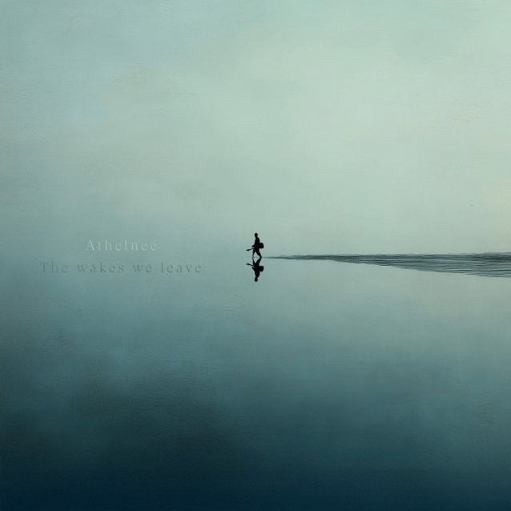
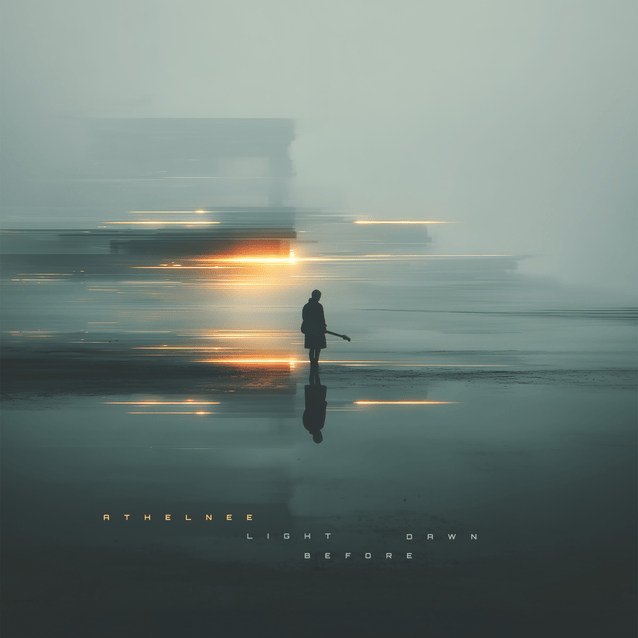

Music
About
I write and produce pop, neo-soul and cinematic music, with human performance at the core. I also release instrumental guitar music as Athelnee.
Selected work

The Wakes We Leave — Athelnee
Composer and performer, mixing and mastering

You Did Me Wrong — Clara Ray
Composer, instruments performer, producer, mixing and mastering
Tijd met jou — Flore
Co-lyricist, composer, instruments performer, producer, mixing and mastering

Light Before Dawn — Athelnee
Composer and performer, mixing and mastering
Little Light — Clara Ray
Composer, instruments performer, producer, mixing and mastering
All That Was Left — Athelnee
Composer and performer, mixing and mastering

Nothing Stays — Clara Ray
Lyricist, co-composer, guitar and bass performer

When It Counts — Clara Ray
Composer, instruments performer, producer, mixing and mastering
Highlighted cinematic work
Silver Fish, Pale Blue Sea
Landing
Rome
Socials
Services
- Production (full tracks)
- Songwriting (topline + lyrics)
- Soundtracks (film, games, commercials and branded content)
- Guitar/bass session work
- Mixing and mastering
Contact
For collaborations, production work and private demos, get in touch.
Email: music [dot] jrw [at] gmail [dot] com